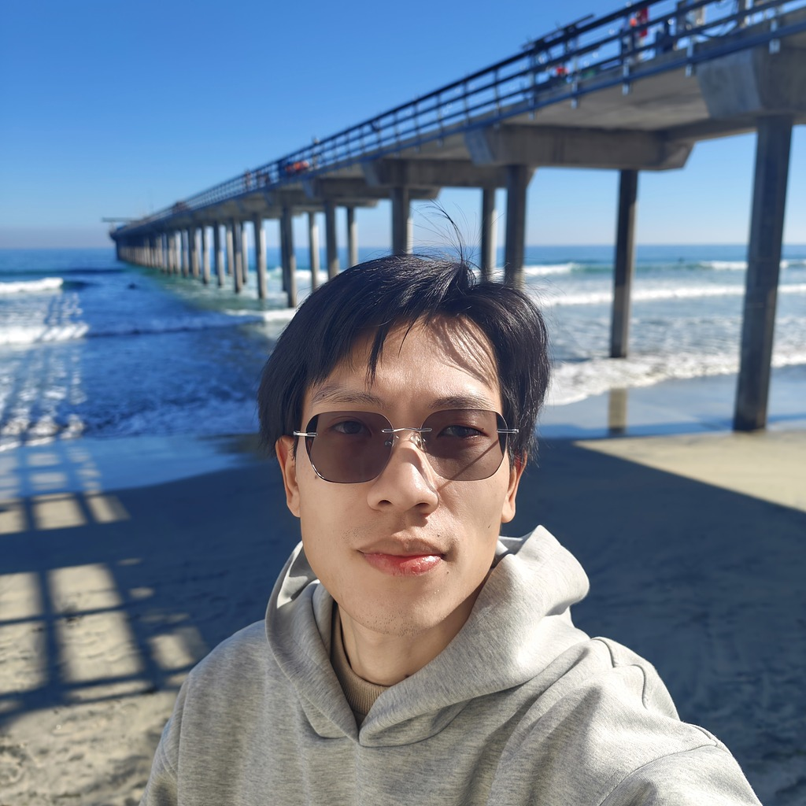

PhD Researcher · EEG Foundation Models & Brain–Computer Interfaces · KU Leuven
liuyin.yang@kuleuven.be liuyinyang1101.github.io
Google Scholar github.com/LiuyinYang1101 ORCID 0000-0002-4095-8841
I build EEG foundation models for brain–computer interfaces: transferring large models pretrained on scalp EEG to intracranial recordings (CORTEG, NeurIPS 2026), testing when foundation models beat traditional decoders (ICLR 2026), and decoding auditory and motor signals in real-time BCI systems. Winner of the NeurIPS 2025 EEG Foundation Challenge.
Updated October 2026 · liuyinyang1101.github.io